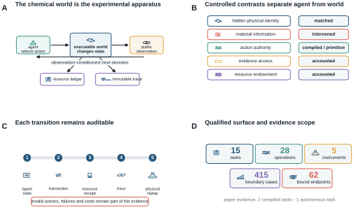
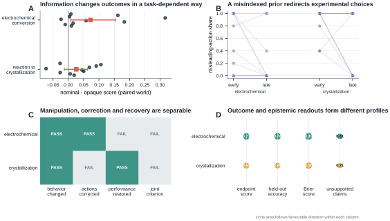
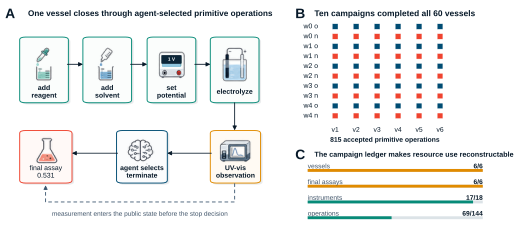
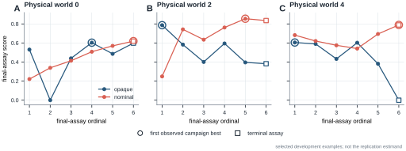
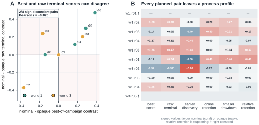
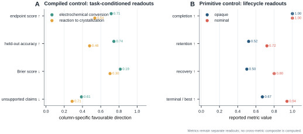

1. Introduction
When a scientific agent reports a high-performing condition, the most important question is no longer only what score did it obtain? It is also what kind of experimental process produced that score? A condition may be found early and retained, found once and abandoned, recovered after a drawdown, or reached at the end of an otherwise uninformative search. These trajectories imply different capabilities even when their final values agree.
This distinction is difficult to measure with existing evaluation regimes. Prediction benchmarks remove the act of experimentation. Optimization benchmarks expose a value-returning oracle but usually collapse each experiment to a vector query. Self-driving laboratories and instrument-operating agents provide indispensable evidence about physical execution, automation and deployment [@szymanski2023alab; @dai2024mobile; @darvish2025organa; @vriza2026instruments], but a physical apparatus cannot usually be cloned many times while changing only the information supplied to the agent. As a result, the agent's experimental behavior is often entangled with a particular laboratory, material batch and observation history.
ChemWorld fills this measurement gap with executable chemical and chemical-engineering worlds. The central design choice is simple: the agent is the experimental subject; the chemical world is the apparatus. Within a stateful, partially observable world, the agent selects additions, process conditions, measurements, termination and final assay. The environment records the consequence of every choice, including invalid operations, failed attempts and resource use. Matched hidden-world identities permit controlled information contrasts, while fresh sessions in the same physical world measure behavioral repeatability.
This apparatus changes what can be asked of a scientific agent. Instead of reducing performance to one leaderboard value, we can measure lifecycle completion, within-campaign best-discovery position, retention of an incumbent, drawdown, recovery, terminal quality, prediction and claim reliability. These are operational readouts of behavior, not inferred mental states. Their non-equivalence is itself a scientific result: similar endpoint outcomes can arise from different experimental histories and capabilities.
We use three evidence layers. First, compiled experiments intervene on material information across two task families and separate optimization from prediction, calibration and claim reliability. Second, primitive-control campaigns show that a general agent can close complete experimental lifecycles under a shared resource ledger. Third, fresh trajectories in matched physical worlds reveal which behavioral features recur and which vary between sessions. Together they establish the paper's central result: an experimental endpoint is an incomplete readout of experimental agency.
Our contributions are:
- an executable, chemistry-native apparatus with stateful operations, active measurements, failures, resource accounting, identity control and exact physical replay;
- a primitive-control protocol in which the agent---rather than a fixed recipe---chooses operations, observations and lifecycle termination;
- controlled information and fresh-session interventions that separate endpoint optimization, prediction, claims, discovery, retention, drawdown and recovery; and
- empirical evidence of operational directional non-identifiability---the sign of a best-of-campaign contrast does not fix the sign of terminal retention--- establishing experimentation itself as the object that scientific-agent evaluation must measure.
2. Relation to existing systems
Self-driving laboratories optimize reactions and materials in real hardware, and chemistry agents increasingly connect language models to literature, planning tools and robotic execution [@boiko2023autonomous; @bran2024augmenting; @panapitiya2026autolabs; @pilon2026robochemflex]. Their defining strength is physical validity: they answer whether a proposed workflow can be executed and whether automation can operate reliably. ChemWorld addresses a complementary question---whether the experimenting agent can be isolated, intervened on and repeated under matched physical identity.
Digital optimization suites provide controlled objective functions and scalable algorithm comparison [@felton2021summit; @hase2021olympus]. Interactive science environments extend this idea toward stateful control, discovery and model identification [@beeler2024chemgymrl; @bloor2024pcgym; @jansen2024discoveryworld; @gandhi2025boxinggym; @duan2025scigym; @nagele2026sciexplorer]. ChemWorld's distinctive unit is a chemical experiment as a resource-consuming sequence of typed operations and measurements, not a single parameter query. The same world can be replayed under different information and authority conditions without changing its hidden physical identity.
Recent work treats agents themselves as behavioral objects and studies how environment design changes scientific discovery [@chen2026agentbehavior; @xin2026eurekagent; @riosgarcia2026scientifically]. ChemWorld brings that perspective to chemistry-native experimental lifecycles. Its contribution is the combination of matched chemical worlds, primitive action authority, evidence access, campaign-wide resources, immutable trajectories and within-world fresh-session replication. It does not replace a robotic laboratory; it provides the controlled measurement apparatus that a real laboratory cannot economically instantiate at scale.
3. ChemWorld makes experimental agency measurable
3.1 Executable worlds rather than value-returning oracles
A ChemWorld task defines a hidden physical state, public observation contract, typed operations, instrument responses, resource endowment, failure semantics and one or more evaluator-bound endpoints. Operations change state. Measurements are actions with costs and timing consequences. Termination closes a vessel, and a final assay is explicitly requested rather than automatically revealed.
The qualified environment surface contains 15 registered tasks, 28 operation types, five instrument classes, 415 deterministic complete-experiment boundary cases and 62 evaluator-bound endpoints (Fig. 1). Qualification establishes runtime reachability and evaluator binding. The empirical paper uses two tasks for compiled controls and one for autonomous primitive control, keeping platform scope and evidence scope explicit.
3.2 Controlled identity, resources and replay
Every run binds source, configuration, task, physical world, material instance, observation namespace and trajectory identity. The public agent view excludes hidden evaluator state. Accepted operations are transactional: a successful transition updates state and consumes the corresponding resources; a rejected operation records its failure without silently repairing the action.
The campaign ledger spans raw materials, solvent, vessels, non-final instrument uses, operation attempts and provider sessions. This design makes opportunity cost part of the experimental record while keeping the ledger external to the prompt. Agents access compact status and history artifacts on demand rather than receiving a continually expanding transcript.
Exact replay means exact reconstruction of environment transitions, public observations and resource changes from the stored trajectory. It does not mean regeneration of the language model's token sequence. Fresh-session replication therefore deliberately samples a new agent trajectory while holding the physical world fixed.
3.3 Evidence layers and analysis units
The number of executed world transitions measures use of the apparatus, not the number of statistically independent samples. Table 1 separates those quantities throughout the paper.

Typed state transitions couple public observations to resource receipts, immutable traces and exact physical replay while experimental contrasts remain explicit.
Table 1 | Qualified environment surface and formal evidence scope
| Quantity | Count | Evidence level |
|---|---|---|
| registered task designs | 15 | release surface |
| typed operation types | 28 | release surface |
| instrument types | 5 | release surface |
| deterministic complete-experiment cases | 415 | design qualification |
| declared endpoints bound to evaluators | 62 | design qualification |
| tasks with formal compiled-agent results | 2 | paper evidence |
| tasks with autonomous-agent results | 1 | paper evidence |
Counts for the environment surface are design qualifications, not claims of agent competence. Formal paper evidence covers fewer tasks than the registered surface.
4. Compiled controls separate outcome from evidence use
Compiled control gives the agent a bounded complete-experiment interface. It is not the target autonomy setting; it is a controlled calibration that can be run across tasks, information conditions and classical optimization policies.
Across ten paired worlds, the nominal-information arm produced a mean nominal-minus-opaque score difference of 0.072 in electrochemical conversion (8/10 positive worlds; 97.5% per-task world-bootstrap interval 0.007 to 0.155) and 0.026 in reaction-to-crystallization (7/10 positive; interval -0.013 to 0.063). The two 97.5% intervals are multiplicity-adjusted descriptive stability intervals for the pre-specified two-task analysis. Thus the same information intervention produced distinct outcome profiles in the two executable task families (Fig. 2A).
The deliberately misindexed arm provides a manipulation check. It redirected the first material-sensitive action in 70% of electrochemical worlds and 100% of crystallization worlds. Misleading-action share subsequently fell from 0.54 to 0.24 in electrochemistry and from 0.86 to 0.50 in crystallization (Fig. 2B). The distinction among action manipulation, later correction and performance restoration is important: both tasks passed the behavior-change check, while their correction and score-restoration checks differed, and neither passed the joint rule (Fig. 2C).
Outcome and epistemic diagnostics also gave different profiles. In the opaque arm, electrochemical conversion combined a 0.715 endpoint score with 0.744 held-out directional accuracy, a 0.186 Brier score and a 0.611 unsupported-claim rate. Reaction-to-crystallization yielded 0.535, 0.478, 0.298 and 0.714, respectively. These measurements are reported separately because none is a substitute for another (Fig. 2D).
Classical optimizers are retained as calibration controls rather than the paper's target competition. Complete world-level contrasts for every baseline, including exact sign summaries and leave-one-world-out ranges, are provided in the sensitivity artifact. This keeps the empirical question aligned with the paper's contribution: what aspects of experimental behavior become measurable once the world is a controlled apparatus?

Paired worlds, a misindexed-prior manipulation and separate outcome and epistemic measures establish the low-authority calibration layer.
Table 2 | Compiled-experiment capability profiles
| Task | Information arm | Worlds | Final score | Held-out accuracy | Brier | Structure F1 | Mechanism F1 | Unsupported claims |
|---|---|---|---|---|---|---|---|---|
| electrochemical-conversion | opaque | 10 | 0.715 | 0.744 | 0.186 | 0.389 | 0.190 | 0.611 |
| electrochemical-conversion | nominal | 10 | 0.787 | 0.778 | 0.149 | not measured | not measured | not measured |
| electrochemical-conversion | misindexed | 10 | 0.685 | 0.711 | 0.209 | not measured | not measured | not measured |
| reaction-to-crystallization | opaque | 10 | 0.535 | 0.478 | 0.298 | 0.275 | 0.144 | 0.714 |
| reaction-to-crystallization | nominal | 10 | 0.562 | 0.433 | 0.316 | not measured | not measured | not measured |
| reaction-to-crystallization | misindexed | 10 | 0.584 | 0.433 | 0.316 | not measured | not measured | not measured |
Scores are means across ten physical worlds. Dashes indicate endpoints that were not defined for that information arm; they are not zeroes. No composite score is formed.
5. Primitive control closes full experimental lifecycles
In a separate primitive-control study, native Codex, configured as
gpt-5.6-sol at medium reasoning effort, received a public workspace and typed
tools. For each vessel it selected material additions, process setpoints,
electrolysis operations, measurements, termination and final assay. The model
could inspect status and history artifacts, but the complete resource ledger was
not inserted into the prompt.
All ten development cells completed all six vessels: 60 complete autonomous experiments through 815 accepted primitive operations (Fig. 3). The agent used 18 non-final measurements per campaign at most, while every campaign had a 144-operation ceiling and fixed stocks of reagents and solvents. Physical-pair, resource-ledger and exact-transition replay audits passed for all cells.
Figure 3A reconstructs one vessel. The important feature is not the particular seven-operation sequence; it is the placement of observation before the next agent decision. A UV--visible measurement entered the public state before the agent chose to terminate and request the final assay. Figure 3B then shows that this lifecycle closed across every vessel and information arm, while Fig. 3C reconstructs the campaign-level resource receipt.

The agent selects operations, observes intermediate evidence, decides when to stop and requests final assay under a reconstructable campaign ledger.
Table 3 | Autonomous development trajectories (G2 v0.4)
| Arm | Cells | Completion | Operations | Best score | Batch AUC | Realized-op AUC | Fixed-budget AUC | Discovery fraction | Retention | Max drawdown | Terminal / best | Recovery |
|---|---|---|---|---|---|---|---|---|---|---|---|---|
| opaque | 5 | 1.000 | 82.600 | 0.631 | 0.617 | 0.520 | 0.563 | 0.320 | 0.520 | 0.333 | 0.671 | 0.500 |
| nominal | 5 | 1.000 | 80.400 | 0.709 | 0.589 | 0.501 | 0.591 | 0.800 | 0.720 | 0.092 | 0.941 | 0.800 |
Each arm contains five physical-world cells and six completed vessels per cell. Operations are mean submitted primitive attempts per cell. These development data select the worlds and endpoints for G2 v0.5 and are excluded from its replication estimand.
6. Endpoint scores conceal experimental trajectories
Primitive control exposes structure that a final recommendation cannot contain. Figure 4 follows six final assays in three development worlds. In world 0, the opaque trajectory lost its initial score, recovered by the fourth assay and finished near the nominal trajectory. In world 2, the opaque arm discovered its campaign best immediately and then lost it, whereas the nominal arm improved and retained a higher terminal value. In world 4, both arms began similarly but their terminal behavior diverged sharply.
We operationalize these patterns with four lifecycle readouts. Within-campaign best-discovery position records when the observed campaign maximum first appears. Online retention asks whether a new assay remains within a pre-specified fraction of the pre-assay incumbent. Maximum absolute drawdown records the largest departure from that incumbent. Terminal-to-best ratio records how much of the observed campaign best remains at the final assay. Loss episodes and recovery delays provide additional summaries when a trajectory falls below its retention boundary.
Across the five development worlds, nominal information was associated with later within-campaign best discovery on average (0.80 versus 0.32 of the six-assay horizon), together with higher retention (0.72 versus 0.52), smaller mean maximum drawdown (0.092 versus 0.333), greater pooled recovery (0.80 versus 0.50) and higher terminal-to-best ratio (0.941 versus 0.671). Because each arm contains one session per development world, these values describe the five matched demonstration worlds. More importantly for the measurement question, the nominal-minus-opaque best-score and terminal-to-best contrasts had opposite signs in two of the five worlds. The endpoint therefore did not identify even the direction of terminal retention within this controlled set.

Development worlds expose early discovery, loss, gradual improvement, retention and terminal divergence that an endpoint alone cannot resolve.
7. Fresh sessions test within-world repeatability
We selected physical worlds 1 and 3 before the replication launch because their development contrasts pointed in different directions. The commit-frozen design crossed two worlds, five fresh trajectory replicates and two information arms. Each cell received six vessel opportunities and the same physical, observation and resource identities as its within-replicate counterpart; the provider did not expose a controllable sampling seed.
Eighteen of 20 cells completed. Two cells were right-censored after 50 and 56 accepted operations by provider-infrastructure failures, leaving four complete pairs in each world. All ten planned pairs remain visible in Fig. 5. The 75% classification rule was frozen after launch while endpoint and lifecycle outcomes remained uninspected; it classified a world-by-metric result as directional when at least three of four available differences shared a sign and the median shared that direction.
The authoritative matrix followed a launcher-level restart after an infrastructure incident in the first launch; the restart decision was recorded before outcome inspection. The protocol deviation, excluded trajectories and separate sensitivity check are reported in Methods 10.7.
Endpoint direction alone did not determine lifecycle direction. World 1 was nominal-favouring for best score, smaller drawdown and terminal-to-best ratio, while discovery and retention were mixed. World 3 was mixed for all five displayed readouts. Across the four pre-specified lifecycle metrics, six of eight world-by-metric classifications were mixed.
The separation is also visible without a directional-classification rule. Across the eight complete fresh-session pairs, the nominal-minus-opaque best-score and terminal-to-best contrasts had opposite signs in four pairs and an exactly zero terminal contrast in another. Their descriptive Pearson correlation was $-0.120$. For example, one pair had a best-score contrast of $-0.167$ but a terminal-to-best contrast of $+0.486$, whereas another had a best-score contrast of $+0.253$ and a terminal-to-best contrast of $-0.060$. These are direct instances of endpoint--lifecycle directional discordance: best-of-campaign direction does not recover terminal-retention direction.
This result is robust to the two missing pair differences: assigning each missing difference an arbitrary positive, negative or zero sign leaves at least six of eight lifecycle classifications mixed. At the 90% retention definition, six of eight were mixed; the count was five at 80% and six at 95%. Requiring four of four matching signs (an 80% directional threshold with four complete pairs) classified all eight as mixed. Across the full threshold-by-zero-handling grid, the count ranged from two to eight; the minimum occurred at a 60% threshold when exact zeros were excluded. Thus the pre-specified result and its missing-sign robustness are preserved, while the broader frequency of mixed labels depends on how exact-zero contrasts are treated.
The fresh sessions therefore expose two forms of information that an endpoint cannot contain: trajectory-to-trajectory variation within a fixed physical world, and pair-level reversals between outcome and lifecycle direction. Both become directly observable only because world identity, observation stream, resource card and action authority remain controlled.

Matched-world session pairs keep right-censored cells visible and show mixed lifecycle directions under every possible sign of the missing differences.
Table 4 | Fresh-trajectory replication (G2 v0.5)
| World | Replicate | Opaque state | Nominal state | Δ best score | Δ mean score | Δ discovery | Δ retention | Δ drawdown | Δ terminal / best |
|---|---|---|---|---|---|---|---|---|---|
| 1 | r01 | completed | right_censored | not measured | not measured | not measured | not measured | not measured | not measured |
| 1 | r02 | completed | completed | 0.285 | 0.304 | 0.000 | 0.200 | -0.273 | 0.035 |
| 1 | r03 | completed | completed | -0.143 | -0.074 | 0.400 | 0.400 | -0.306 | 0.173 |
| 1 | r04 | completed | completed | 0.170 | 0.144 | -0.400 | 0.000 | 0.045 | -0.073 |
| 1 | r05 | completed | completed | 0.381 | 0.429 | -0.400 | 0.000 | -0.040 | 0.319 |
| 3 | r01 | completed | completed | -0.167 | -0.121 | 0.600 | 0.400 | -0.463 | 0.486 |
| 3 | r02 | completed | completed | -0.368 | -0.236 | -0.800 | -0.200 | 0.057 | -0.007 |
| 3 | r03 | completed | completed | 0.001 | -0.009 | 0.000 | 0.000 | -0.028 | 0.000 |
| 3 | r04 | completed | completed | 0.253 | 0.291 | -0.200 | 0.000 | 0.030 | -0.060 |
| 3 | r05 | right_censored | completed | not measured | not measured | not measured | not measured | not measured | not measured |
Deltas are nominal minus opaque within the same physical world and replicate block.
The two deliberately selected worlds are not pooled into a population-level estimate.
Terminal coverage: 18 completed cells, 2 right-censored cells, and 8 complete pairs (4 in world 1; 4 in world 3).
The frozen interpretation mapping selected frequent_within_world_reversal: 6 of 8 world-by-core-lifecycle classifications were mixed. Policy SHA-256: 93604ce8af7211f35c5d3b896609addef6d436f3248f45aba3cc04a11da9d67e.
Frozen descriptive summary: the available fresh-session contrasts frequently changed direction within the selected physical worlds.
Provider sampling was not seed-controlled; the summary does not identify a causal provider effect or a variance-dominance relation.
8. Experimental agency is a profile, not a scalar
The compiled and primitive-control studies measure complementary parts of experimental agency. Compiled control offers repeated task and information contrasts together with prediction, calibration and claim diagnostics. Primitive control reveals lifecycle completion, retention, recovery and terminal behavior. Figure 6 places these readouts side by side without combining them into a composite score.
The profile view supports a stronger evaluation standard for scientific agents. Success should be accompanied by evidence that the agent can complete the experimental lifecycle, make observations available to later decisions, retain or recover a productive strategy and reproduce the relevant behavior in a fresh session. ChemWorld provides the controls needed to measure those properties separately.

Outcome, prediction, calibration, claim reliability, completion, retention, recovery and terminal behavior remain separate rather than being collapsed into a composite score.
9. Discussion
ChemWorld contributes a new experimental object: the process by which an agent experiments. Its value does not depend on replacing a self-driving laboratory or winning a universal optimization leaderboard. It occupies a different and useful role. A real laboratory establishes physical executability; an optimization suite calibrates search; an executable chemical world can clone physical identity, intervene on information and authority, preserve failures, and sample fresh decision trajectories at low marginal cost.
The present experiments demonstrate three consequences. First, information can change actions, endpoint outcome, prediction and claim reliability along different axes. Second, autonomous lifecycle completion does not specify how a high-performing condition was discovered, retained or recovered. Third, best-score and terminal-retention contrasts can reverse sign across matched fresh sessions. We call this operational directional non-identifiability: within the controlled contrast used here, the sign of best-of-campaign improvement does not determine the sign of terminal-retention improvement. This is a bounded measurement claim, not a population-frequency or formal parameter- identifiability claim.
The next scientific use of this apparatus is not simply a larger leaderboard. It is a factorial measurement program: randomly sampled worlds, multiple mechanism families, multiple agents, controlled evidence access and matched resource endowments. Such experiments can estimate world heterogeneity, trajectory variability and intervention response hierarchically, and can test whether lifecycle reliability predicts transfer, recovery from misinformation or behavior under scarcity.
Synthetic instruments and scoring laws make those interventions inexpensive and repeatable. A calibrated physical or high-fidelity bridge can then test which trajectory phenomena transfer to a particular laboratory system. The two forms of evidence are complementary: executable worlds identify controlled behavioral structure; physical laboratories establish deployment validity.
10. Methods
10.1 Environment qualification
The task registry and runtime-domain audit declare task contracts, typed operations, instrument interfaces, state invariants and evaluator-bound success metrics. Qualification required deterministic reachability through 415 complete boundary cases and binding of all 62 declared endpoints to evaluator state. The qualified surface contains 15 tasks, 28 operation types and five instruments. These counts characterize supported environment capabilities; empirical agent results are reported only for the task families actually exercised.
10.2 Compiled-control protocol
Compiled control covered electrochemical conversion and reaction-to-crystallization. Each task used physical world seeds 0--9 and three information conditions: opaque material codes, anonymous nominal properties and a commit-frozen misindexing intervention. Each participant session selected 20 complete experiments, after which a replay verifier recomputed all scores from the immutable reports. Classical policies used the same world identities, budgets and information contracts.
The opaque condition replaced material identities by stable anonymous codes. The nominal condition exposed the correct anonymous material-family property rows without revealing latent world residuals. The misindexed condition transposed one targeted material row chosen using independent qualification worlds before the formal campaigns; the affected mapping was fixed across the ten formal worlds. These conditions therefore intervene on the supplied prior while holding the physical world, action space, score and budget fixed.
The electrochemical endpoint is the gated weighted sum of selective product yield (0.30), electrochemical selectivity (0.15), conversion (0.10), Faradaic efficiency (0.12), transport efficiency (0.10), ohmic efficiency (0.08) and energy efficiency (0.15); selective yield supplies the multiplicative gate. The reaction-to-crystallization endpoint combines reaction score (0.25), crystal yield (0.25), crystal purity (0.20), crystal size (0.10), crystal-size- distribution quality (0.20) and a fines-fraction penalty (-0.10). The scoring contract was identical across information arms within a task.
Compiled participants used the Codex subscription transport with model alias
gpt-5.6-sol at medium reasoning effort, structured response output, Codex tools
disabled and no session persistence. G0 and G2 therefore share a model alias and
reasoning setting but use different scaffolds and action interfaces; they are
complementary evidence layers, not a matched causal comparison of authority.
The nonduplicated total comprises 2,280 participant executions and 27,300 classical-control executions. Statistical summaries treat the paired physical world, not each simulator execution, as the analysis unit. Seeds 0--9 form the complete designed set for the intervention analysis. Information contrasts report mean and median world differences, positive/negative counts, exact sign summaries, leave-one-world-out mean ranges and 100,000-draw, commit-frozen percentile world-bootstrap intervals as finite-world stability summaries. A 97.5% interval is reported for each task as a multiplicity-adjusted descriptive stability interval across the two pre-specified tasks; no world-superpopulation coverage claim is made.
The information-matched classical suite comprised uniform random search, Latin hypercube sampling, local greedy perturbation, Gaussian-process expected improvement, random-forest expected improvement, safety-constrained Gaussian-process expected improvement and a multi-output telemetry random-forest policy. Electrochemical calibration additionally included privileged material-descriptor and transport-prior policies together with commit-frozen shuffled-descriptor negative controls. The privileged policies calibrate what the environment permits; they are not information-matched agent comparators.
The misindexing manipulation transposed one targeted material row selected on independent qualification worlds. Commit-frozen checks separately evaluated initial behavior change, later action correction, performance restoration and their joint criterion.
Epistemic diagnostics were scored independently of the optimized endpoint. At final synthesis, the agent predicted increase, decrease or no material change for three frozen one-factor intervention queries and their three registered metrics. Each query was then executed as paired reference/intervention experiments with two replicates and common observation-noise identities. The executed difference was labelled increase or decrease when it crossed the frozen absolute threshold of 0.01 and no material change otherwise. Held-out directional accuracy is the fraction of these query-by-metric labels predicted correctly; the prediction call could not alter the submitted recommendation. The held-out Brier score is the mean of $(c-y)^2$, where $c$ is the submitted confidence and $y$ indicates whether that directional prediction was correct.
Declared world-understanding claims were matched against a frozen vocabulary of observable cause sets, effects, admissible directional relations and mechanism tags. Unsupported-claim rate is the fraction of submitted declarations whose cause-set/effect structure has no reference match. Directional accuracy among matched declarations, structural edge precision/recall, mechanism-tag scores and a declaration-level confidence Brier score were retained as separate diagnostics, so no single epistemic statistic was treated as a proxy for the others.
10.3 Primitive-control protocol and resource ledger
The autonomous electrochemical protocol exposed typed tools for adding reagent and solvent, setting potential/current/material profile, electrolyzing, measuring, inspecting public status/history, terminating and requesting the final assay. Each cell contained six vessel opportunities. The campaign card bounded vessels, raw stocks, non-final instrument uses, operation attempts and provider sessions. Resource state was stored in an external artifact and exposed through compact queries; it was not repeatedly copied into the model context.
Native Codex used model alias gpt-5.6-sol with medium reasoning effort. Each
vessel used a fresh provider session. The environment accepted only typed tool
transactions; explanatory prose could not change physical state. A cell was
complete only when every vessel was terminated and had a committed final assay.
10.4 Operational trajectory readouts
Let $s_1,\ldots,s_K$ be the final-assay scores in a campaign, with $K=6$, and let $b_t=\max_{j\leq t}s_j$ be the online incumbent.
Within-campaign best-discovery position is the first index of the observed campaign maximum, normalized to $[0,1]$:
For retention fraction $q$, assay $t>1$ retains the incumbent when $s_t\geq q b_{t-1}$. Online retention is the fraction of the $K-1$ opportunities satisfying this rule. A loss episode begins below the same boundary; its reference incumbent remains fixed until a later assay recovers to that boundary. Maximum absolute drawdown is $\max_t\max(0,b_{t-1}-s_t)$. Terminal-to-best ratio is $s_K/\max_t s_t$ when the observed best is positive. The primary retention fraction was $q=0.90$; $q=0.80$ and $q=0.95$ were sensitivity definitions.
These are operational trajectory readouts. “Discovery” refers to discovery of the best condition observed within that campaign, not identification of the global optimum of the hidden world.
10.5 Fresh-session replication
The replication crossed physical world seeds 1 and 3, trajectory replicates
r01--r05, and opaque/nominal information conditions. Worlds were selected
from the development set before launch because their observed development
directions differed. Development trajectories were excluded from the replication
estimand. Pair order and within-pair arm order were frozen in the schedule.
A provider failure before any accepted operation could be retried up to the frozen limit. A provider or method-resource failure after an accepted operation made the cell terminal and right-censored. Completed and right-censored cells in the authoritative launch were not replaced. Pair differences were computed only when both arms completed; no missing outcome was imputed.
For each world and metric, the primary descriptive rule---frozen after launch while endpoint and lifecycle outcomes remained uninspected---classified a direction when at least 75% of available differences shared a sign and the median shared that direction. With four complete pairs this is a three-of-four rule. Otherwise the result was mixed. The four primary lifecycle metrics were best-discovery position, online retention, maximum absolute drawdown and terminal-to-best ratio; best and mean scores were endpoint diagnostics.
10.6 Sensitivity analyses
The frozen primary analysis was not changed. A separately hashed P0 sensitivity artifact evaluated directional thresholds 0.60, 0.75 and 0.80; inclusion or exclusion of exact zero differences; retention fractions 0.80, 0.90 and 0.95; and every positive/negative/zero sign assignment to the two missing pair differences. Because lifecycle metrics share the same six assay outcomes, the eight world-by-metric classifications are treated as a descriptive summary, not as eight independent inferential units.
10.7 First-launch infrastructure incident
The commit-frozen replication protocol was first launched on 1 August 2026. A
detached outer Python process disappeared after cell-001 had completed six
vessels and cell-002 had recorded four accepted operations. The cell-level
protocol specified right-censoring after any accepted action and no rerun of a
terminal cell. The decision to exclude and restart the entire launch therefore
constitutes a protocol deviation at the launcher level.
The decision was made without changing the protocol, schedule, worlds, arms,
budgets or analysis rule. The original directory was retained immutably; its
completed cell and partial trajectory are included in the public trajectory
archive. The authoritative matrix is the second launch and remains the primary
analysis. The excluded launch is not pooled into primary pairs. As a transparent
descriptive check, its completed nominal world-1/r01 cell had six scores from
0.654 to 0.730 (mean 0.710); pairing it across launches with the corresponding
formal opaque trajectory gives positive best-score, mean-score, retention and
terminal contrasts and a smaller drawdown. This direction is compatible with,
and not required for, the primary conclusion that at least six lifecycle
classifications remain mixed.
10.8 Scope-stopped multiworld extension
After the primary replication, a prospective 16-world extension was launched to estimate broader heterogeneity. The owner stopped it as a scope decision after three complete pairs and one right-censored cell, without inspecting any complete-pair scores or arm contrasts. The parent matrix was incomplete, all partial trajectories were retained, and none of its outcomes enters the present estimand, figures or inferential language. This extension is an execution record for future multiworld work, not an additional result of this paper.
10.9 Provenance, public boundary and replay
Source, configuration, world, material, observation and trajectory identities
are SHA-256 bound. The evaluator trajectory contains hidden physical identity;
the agent-facing current.json and history.jsonl expose only the public schema.
Public-boundary tests compare those schemas and inspect representative workspaces
for hidden-field leakage.
The release contains the self-hashed derived-data object, P0 sensitivity object, world-level tables, all 20 compact formal trajectories, both durable trajectories from the excluded first launch, a terminal file index and an independent verification attestation. Compact trajectories omit provider response content and hidden evaluator identity while retaining the fields required for exact physical-transition and resource replay.
11. Data and code availability
Code, configuration, derived data, figure generators, the arXiv source package
and paper-sufficient public trajectories are publicly available in the MIT-licensed
ChemWorld repository at
github.com/sunyrain/ChemWorld/tree/arxiv-v1.
The versioned paper release is rooted at
benchmark/releases/chemworld-serious-v1,
and its manifest binds every paper artifact to its SHA-256 identity. The G0
raw-file index covers 1,441 files across four immutable source roots; the tracked
world-level summaries and public derived-data object reproduce every main-text
number, table and figure. The G2 public archive contains compact replayable
trajectories for all formal cells and for the first-launch infrastructure
incident. Provider authentication, unrestricted provider responses and hidden
evaluator identities are excluded from the public package.
The 17.7-GB G0 raw roots are bound by the public file-level hash index but are not
included in the repository and have not yet received a durable external archive
identifier; raw-byte access is therefore not presently available from a permanent
archive. The tracked world-level summaries and derived-data object are sufficient
to regenerate the paper's reported analyses.
12. Conclusion
ChemWorld turns the act of experimentation into a controlled scientific object. Its executable worlds allow an agent to choose operations, seek evidence, spend resources, experience failure and close experimental lifecycles while physical identity remains matched and every consequence remains replayable. The resulting evidence separates an endpoint from the process that produced it: task outcome, prediction, retention, recovery and fresh-session repeatability form distinct readouts. The central message is therefore simple and actionable: an endpoint is a result, not an explanation of experimental agency; the process itself can now be measured.
References
- Autonomous chemical research with large language models. Nature 624, 570–578 (2023). doi
- Augmenting large language models with chemistry tools. Nature Machine Intelligence 6, 525–535 (2024). doi
- An autonomous laboratory for the accelerated synthesis of inorganic materials. Nature 624, 86–91 (2023). doi
- Autonomous mobile robots for exploratory synthetic chemistry. Nature 635, 890–897 (2024). doi
- ORGANA: A robotic assistant for automated chemistry experimentation and characterization. Matter 8 (2025). doi
- A Multiagent-Driven Robotic AI Chemist Enabling Autonomous Chemical Research On Demand. Journal of the American Chemical Society 147, 12534–12545 (2025). doi
- Agentic LLM Reasoning in a Self-Driving Laboratory for Air-Sensitive Lithium Halide Spinel Conductors. arXiv, 2604.11957 (2026). Preprint, arXiv:2604.11957.
- AutoLabs: cognitive multi-agent systems with self-correction for autonomous chemical experimentation. Scientific Reports 16, 19554 (2026). doi
- A flexible and affordable self-driving laboratory for automated reaction optimization. Nature Synthesis (2026). doi
- Verification and execution of the scientific literature via chemputation augmented by large language models. Communications Chemistry 9, 191 (2026). doi
- PRISM: protocol refinement through intelligent simulation modeling. Digital Discovery 5, 2613–2628 (2026). doi
- Accelerating scientific discovery with Co-Scientist. Nature 655, 487–496 (2026). doi
- A multi-agent system for automating scientific discovery. Nature 655, 497–505 (2026). doi
- Operating advanced scientific instruments with AI agents that learn on the job. npj Computational Materials 12, 160 (2026). doi
- An agentic artificially intelligent X-ray scientist. Nature Machine Intelligence 8, 1075–1086 (2026). doi
- Summit: Benchmarking Machine Learning Methods for Reaction Optimisation. Chemistry–Methods 1, 116–122 (2021). doi
- Olympus: a benchmarking framework for noisy optimization and experiment planning. Machine Learning: Science and Technology 2, 035021 (2021). doi
- ChemGymRL: A customizable interactive framework for reinforcement learning for digital chemistry. Digital Discovery 3, 742–758 (2024). doi
- PC-Gym: Benchmark Environments For Process Control Problems. arXiv, 2410.22093 (2024). Preprint, arXiv:2410.22093.
- MADE: Benchmark Environments for Closed-Loop Materials Discovery. arXiv, 2601.20996 (2026).
- DiscoveryWorld: A Virtual Environment for Developing and Evaluating Automated Scientific Discovery Agents. Preprint 37 (2024). doi
- BoxingGym: Benchmarking Progress in Automated Experimental Design and Model Discovery. arXiv, 2501.01540 (2025). Preprint, arXiv:2501.01540.
- Measuring Scientific Capabilities of Language Models with a Systems Biology Dry Lab. arXiv, 2507.02083 (2025). Preprint, arXiv:2507.02083.
- Agentic Exploration of Physics Models. Physical Review X 16, 031002 (2026). doi
- Self-Evolving Scientific Agent Discovers Generalizable Physically-Reasoned Fluid Control. arXiv, 2606.08405 (2026). Preprint, arXiv:2606.08405.
- NewtonBench: Benchmarking Generalizable Scientific Law Discovery in LLM Agents. arXiv, 2510.07172 (2026).
- DiscoverPhysics: Benchmarking LLMs for Out-of-the-Box Scientific Thinking. arXiv, 2605.26087 (2026). Preprint.
- LLM-AutoSciLab: Closed-Loop Scientific Discovery via Active Experimentation with LLMs. arXiv, 2605.24043 (2026). Preprint.
- CausaLab: A Scalable Environment for Interactive Causal Discovery Toward AI Scientists. arXiv, 2605.26029 (2026). Preprint.
- ReplaySCM: A Benchmark for Executable Causal Mechanism Induction from Interventions. arXiv, 2605.08197 (2026). Preprint.
- AI scientists produce results without reasoning scientifically. arXiv, 2604.18805 (2026). Preprint, arXiv:2604.18805.
- AI agent behavioral science. Humanities and Social Sciences Communications 13, 1011 (2026). doi
- EurekAgent: Agent Environment Engineering is All You Need For Autonomous Scientific Discovery. arXiv, 2606.13662 (2026). Preprint, arXiv:2606.13662.
- Socratic agents for autonomous scientific discovery in high-dimensional physical systems. arXiv, 2606.26722 (2026). Preprint.
- End-to-end autonomous scientific discovery on a real optical platform. arXiv, 2604.27092 (2026). Preprint.
- Stress-testing large language model agents in a robotic chemistry laboratory. arXiv, 2607.23045 (2026). Preprint.
- LabUtopia: High-Fidelity Simulation and Hierarchical Benchmark for Scientific Embodied Agents. arXiv, 2505.22634 (2025).
- Labimus: A Simulation and Benchmark for Humanoid Dexterous Manipulation in Chemical Laboratory. arXiv, 2606.31037 (2026). Preprint.
- The ADePT framework for assessing autonomous laboratory robotics. Communications Chemistry 9, 99 (2026). Perspective. doi
- MATTERIX: toward a digital twin for robotics-assisted chemistry laboratory automation. Nature Computational Science (2026). doi
- LabOSBench: Benchmarking Computer Use Agents for Scientific Instrument Control. arXiv, 2606.16802 (2026). Preprint.
- LabRobFail: A Benchmark for Robotic Failure Analysis in Chemical Self-driving Laboratory. arXiv, 2607.23704 (2026). Preprint; under review.
- ScienceBoard: Evaluating Multimodal Autonomous Agents in Realistic Scientific Workflows. arXiv, 2505.19897 (2026).
- Benchmarking AI Agents for Addressing Scientific Challenges Across Scales. arXiv, 2606.12736 (2026). Preprint.
- ChemReason-Bench: Benchmarking Large Language Models for Procedural Reasoning in Experimental Chemistry. Preprint, 33211–33248 (2026). doi
- LLEMA: Evolutionary Search with LLMs for Multi-Objective Materials Discovery. Preprint (2026).
- Hierarchical Experimentalist Agents. arXiv, 2606.29315 (2026). Preprint.
- AgentChemist: A Multi-Agent Experimental Robotic Platform Integrating Chemical Perception and Precise Control. arXiv, 2603.23886 (2026). Preprint.